10-hour days became 4 to 8. The close rate went up.
How one salesperson put an AI operating layer under a CRM with no API, answered every lead in minutes, showed every customer a picture of what they were buying, and finished 2026 ranked first of 17 reps on close rate.
Close rate ranking among active reps, 2026, at 20.5%
Company dashboardMonthly close rate, February to June: from 13th of 15 reps to 1st of 19 in 2 months
Company workbookCustomers replying to the first-response email, manual months versus July
Email archive, 388 emailsA working day: busy season before, summer after
Brooks Golden's estimateWatch Brooks walk through the system inside the CRM.
Less admin, more selling, better numbers.
Custom Inflatables makes custom inflatables for brands and organizations. Brooks Golden joined as a product specialist in February 2026 and carried a full pipeline of roughly 100 new leads a month in season.
Between March and August he built and ran the automation described on this page, while doing the sales job. In February he ranked 13th of 15 reps on close rate. By April he was 1st of 19, and he stayed 1st or 2nd through June, about 6 points above the team average. The company's year-to-date leaderboard puts him first of 17 active reps. The working day went from roughly 10 hours in busy season to 4 to 8 hours.
Sales skill, lead mix and timing all play a part in a close rate, so this page does not claim the software did all of it. It shows what the system did, what it cost to run, and how it stayed reliable.
Monthly close rate, new leads
Close rate = new orders divided by new leads for the month, the company's own definition. February to June come from the company's accounting workbook. * July and August are Brooks's figures from the monthly reports and are not yet reconciled to the workbook.
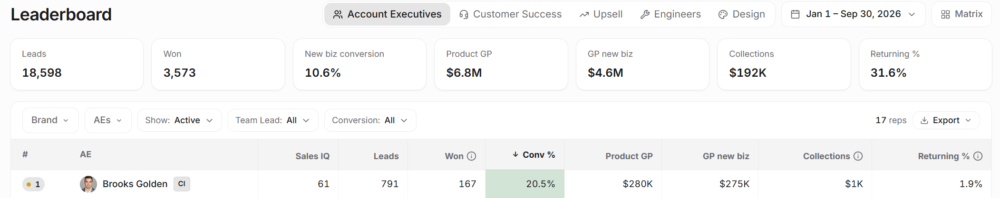
Every lead needed the same 6 things. All of them were manual.
A fast first reply. A picture of the product. A quote. Follow-up until an answer. A phone call. A clean handoff to production when they bought. With about 80 active deals at any time, a rep can personally touch 10 to 20 a day. The rest sit. And Pipedrive, the CRM, offered no API access on this plan, so none of it could be automated the conventional way.
Busy season, before as Brooks describes it
- 7:30Triage the inbox and hand-write first replies to overnight inquiries
- 9:00Calls, when there was time between emails
- 10:30Type quotes line by line from call notes, 10 to 15 minutes each
- 13:00Chase follow-ups from memory; some slip
- 15:00Hunt Drive folders for example photos, build mockups by hand
- 17:00Rewrite closed deals for customer service and engineering
- 19:00Catch up on the replies that arrived during all of the above
About 10 hours
With the system, summer as Brooks describes it
- 8:00Review the first responses the system drafted and released at 8:00; send
- 9:00Make the calls the system scheduled the day before
- 11:00Review quotes and concept images that arrived as saved drafts; send
- 13:00Answer inbound replies from drafts already written from the deal history
- 15:00Check the labels on the board: what needs a human today
- 16:00Done, or work on next-day prep
4 to 8 hours
12 leverage points along the customer journey.
Each one removed a specific piece of manual work. Each one also changed something the customer felt: speed, clarity, or attention. They were built in roughly this order, and they depend on each other.
The first response is where the customer is most interested.
Leverage point 1A first response in minutes, about their project
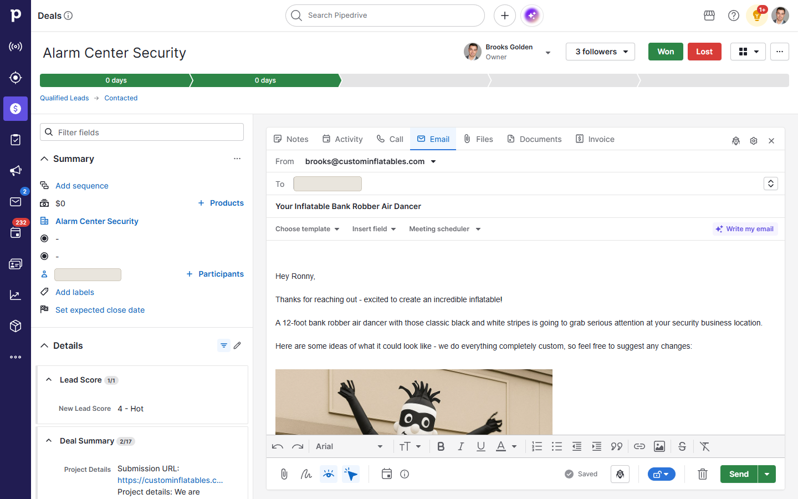
Leverage point 2A reply draft waiting for every inbound email
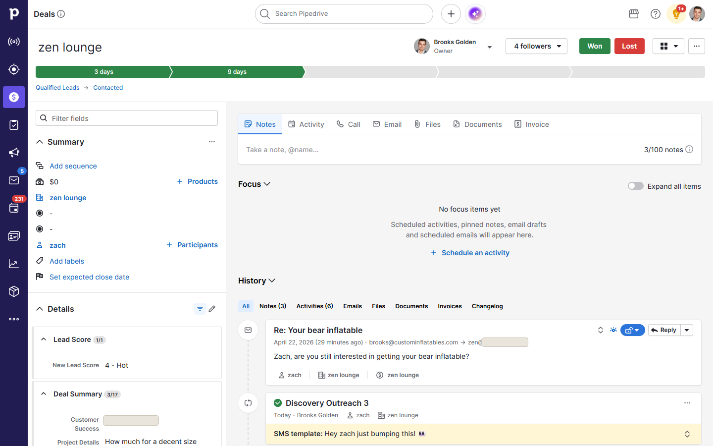
Nobody buys a custom inflatable they cannot picture.
Leverage point 33 concept images with every quote
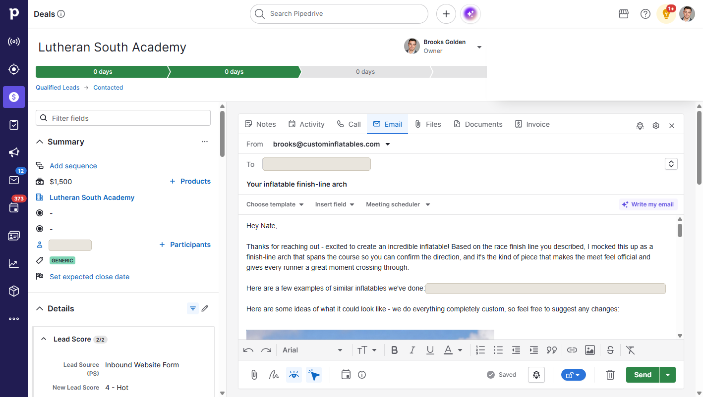
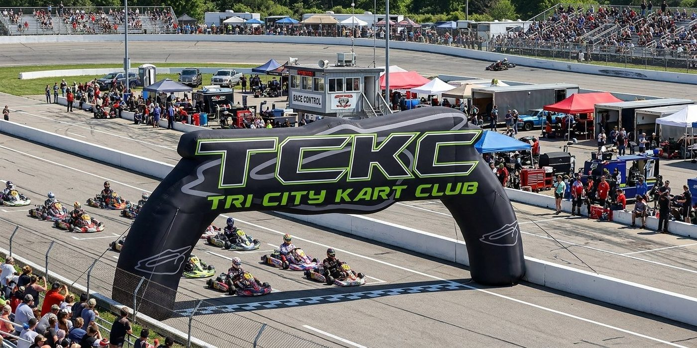
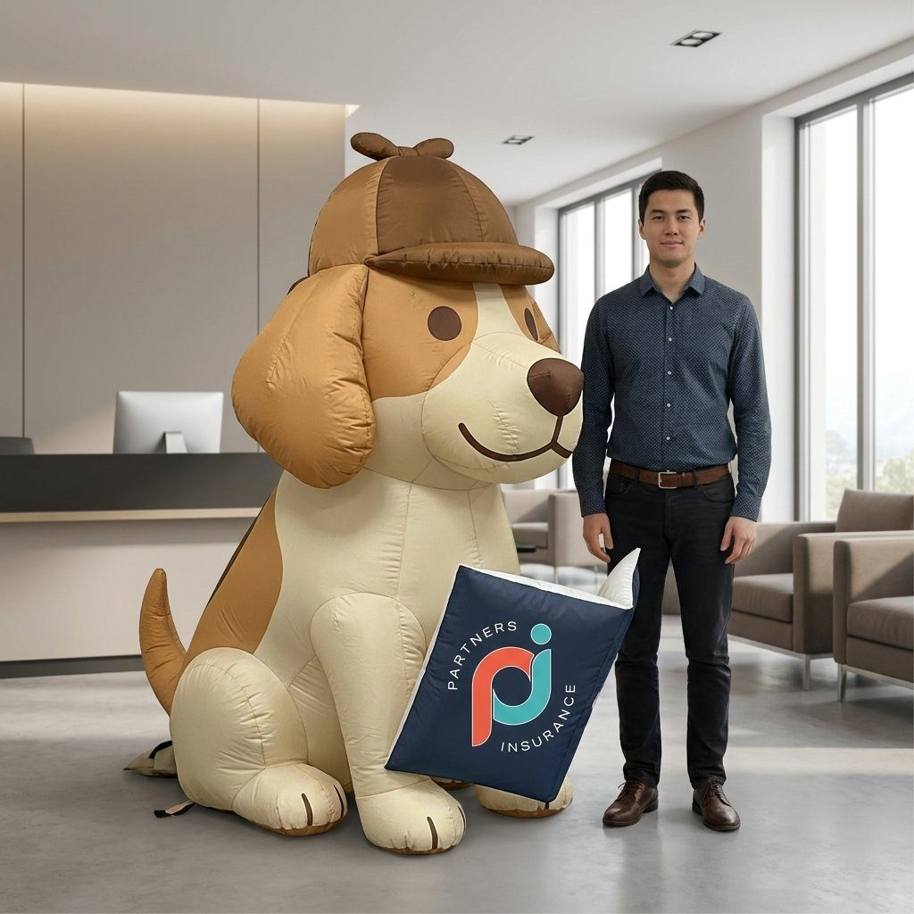
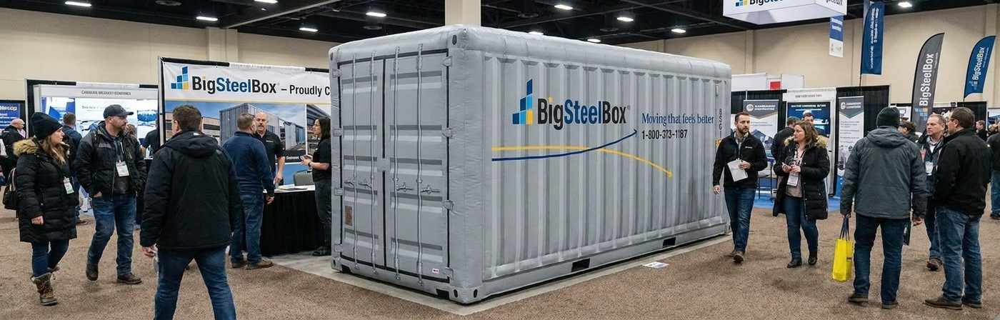
These are design concepts generated for real quotes, not photographs of delivered products, and not endorsements by the organizations shown.
Leverage point 4: real project photos, found for you
A categorized catalog of past projects. The system selects examples that match the product type and links them from the email, so the customer sees proof it has been built before.
From a call to a priced, published quote in minutes.
Leverage point 5Call transcript to quote: where it started
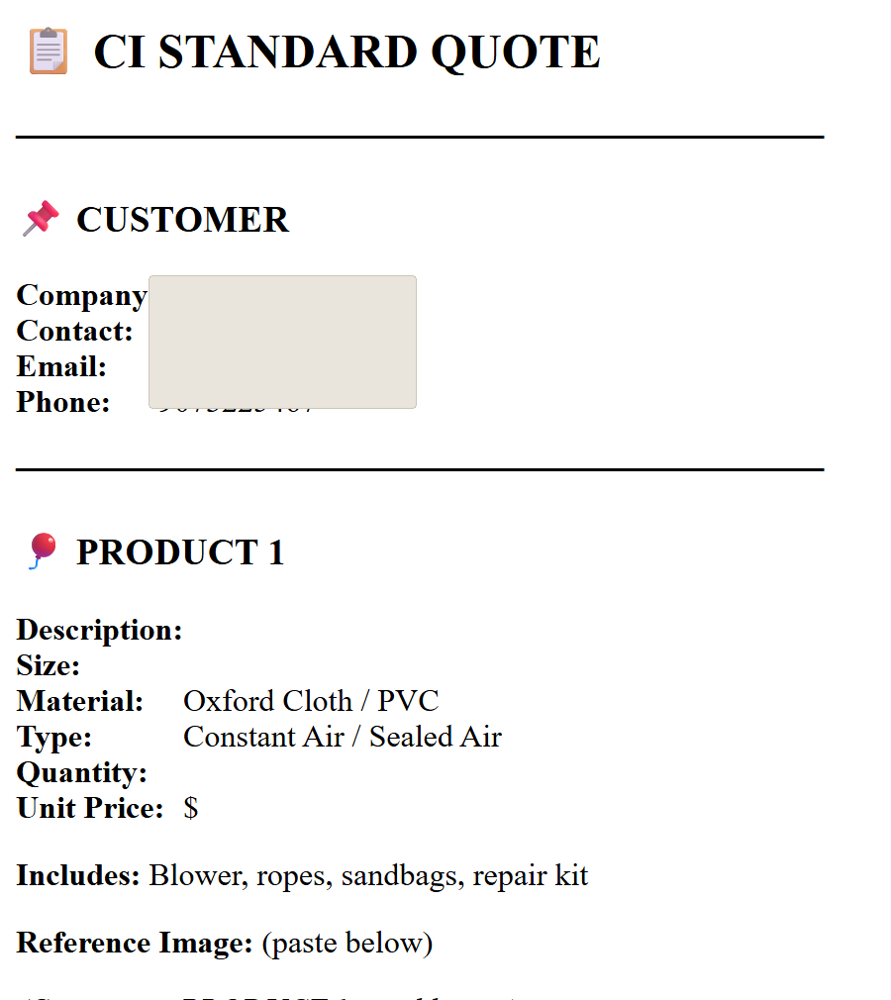
Leverage point 6Standard and options quote pages, generated and published
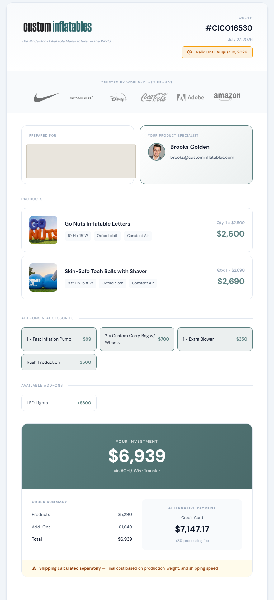
Leverage point 7One searchable quote database
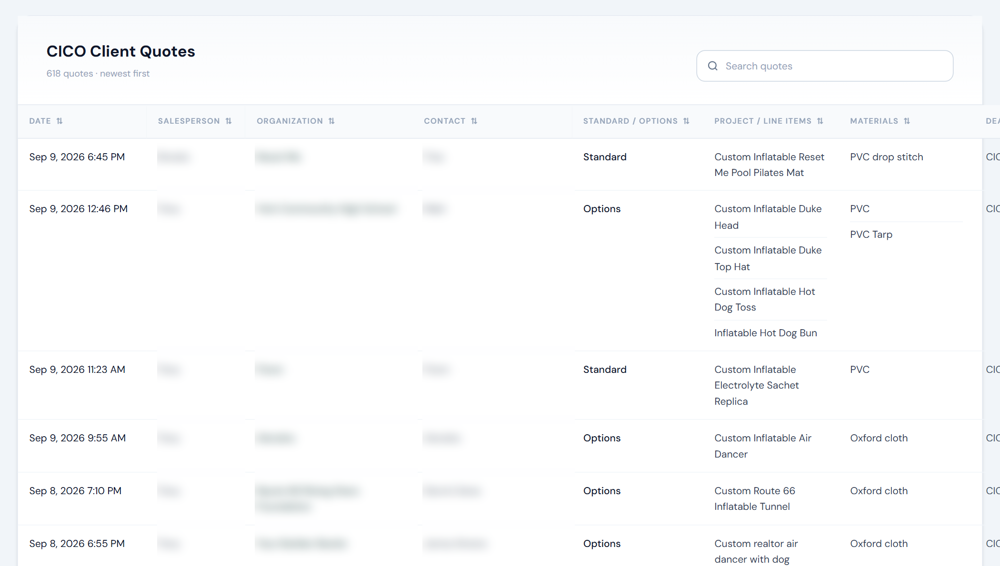
Nothing slips, and the phone gets picked up.
Leverage point 8: follow-up that runs on evidence
Each stage has a cadence. Contacted: business day 1, 4, 7 and 10. Quote sent: day 1, 3, 6 and 13. Negotiation and Closing run slower, and the day-10 email politely closes the loop. Sends happen only in the windows that historically got replies: weekdays, 11:00 to 19:00, Tuesday and Wednesday best, never weekends, at most 1 automated send per deal per day. A reply stops the sequence. A 20% holdout keeps the measurement honest. Drafts wait for Brooks's review under a “Hammock” label.
1,332follow-up drafts writtenLeverage point 9: “Call or text the prospect”
24 hours after a lead arrives with a quote but no conversation, the system creates 1 activity for Brooks: call or SMS. In the Closing stage, the day-7 touch is a phone nudge, not another email. Email closes sales; a phone call builds the relationship. This reminder is the piece Brooks credits most.
Leverage point 10: watchdogs on every promise
Every open deal is checked for a next activity. Every inbound email is checked against a 20-hour reply deadline, with weekend arrivals due Monday at 8:00. Every business promise (a lead answered, a quote sent, a handoff done) is checked every 15 minutes. Labels on the board (Hammock, Football, META, Generic) say what needs a human and what the deadline flag means.
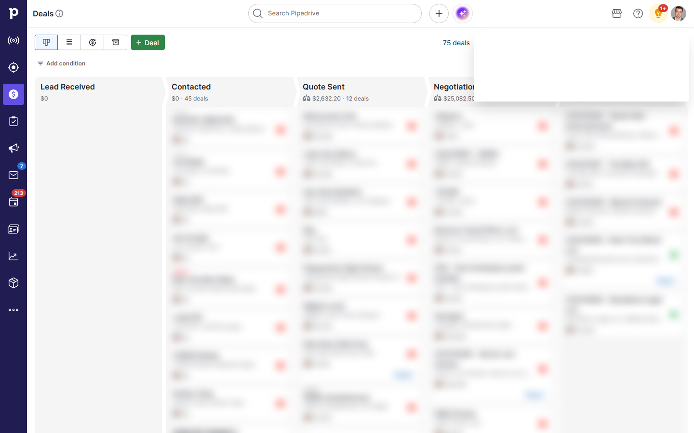
The sale becomes a production brief without rewriting it.
Leverage point 11Deal synthesis and call transcription
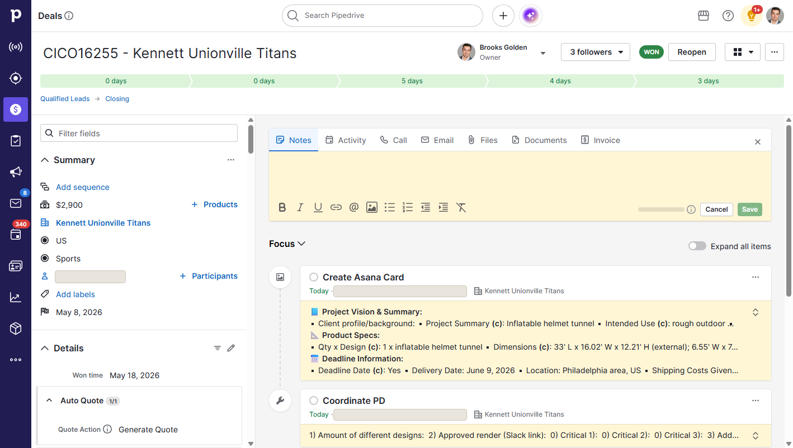
Leverage point 12Handoff to customer service and engineering
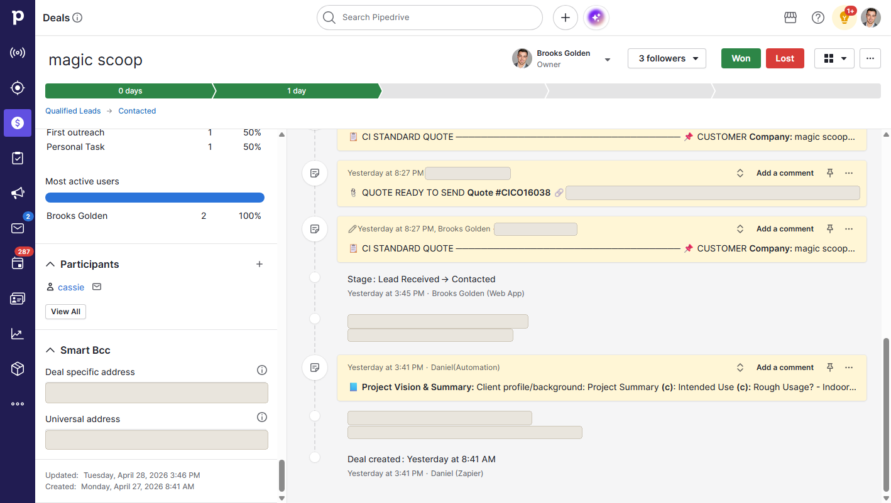
What 23 weeks of production looked like, from the system's own ledgers.
AI calls to run the pipeline, May 11 to September 18
Usage ledgerfirst-response emails drafted
Usage ledgerreply and follow-up drafts written for review
Usage ledgeroutbound email volume, February to June (204 to 872 a month), in fewer hours
Email archivescheduled jobs on weekday and business-hour rules
Server scheduletracked work items on the repair board, 99.8% closed
Paperclip databasecode commits, with 789 written handoff and audit records
Git historya month for the cloud server that ran all of it
Hosting receiptsAI calls counted from the automation's usage ledger, which began on May 11; the quote pipeline ran on a separate path before that. Work items include scheduled routine runs as well as repair tickets. AI models ran on 2 flat-rate subscriptions plus a metered image service, so the server line is the only monthly infrastructure bill.
One always-on browser in the cloud, driven like a person would.
Pipedrive gave us no API. So the system uses the same screens a salesperson uses, on a small cloud server, with a private connection, on a schedule, with every result checked in the CRM before a job is allowed to finish.
The whole stack. Brooks never ran a browser on his own machine for this; every CRM action happened on the server, and he reviewed the results in his normal CRM login.
Cloud server + Tailscale
A small Hetzner virtual server, always on, so the work never depended on a laptop being open. Tailscale gives private access to it and routes its traffic through Brooks's home connection, so the CRM sees 1 trusted login location instead of a data-center address that triggers CAPTCHAs.
One browser, one lock
The CRM allows 3 logged-in devices, so every job shares a single Chrome profile. Each job must hold a lock before touching it, so 2 jobs never fight over the same screen. When the queue got busy, the fix was to poll less, not to add a second browser.
Verified outcomes
A job is done only when the email, note, activity or card is confirmed present on a fresh load of the record. A script that ran without errors proves nothing; a saved draft that vanished on reload is a failure.
Scheduled on business rules
Jobs run on Eastern time, on weekdays, inside the hours customers reply. Overnight leads are held for an 8:00 release. Weekends are quiet on purpose.
A repair board for AI agents
Paperclip tracks every failure as a ticket with evidence. Agents pick tickets up under a governor: a working window, daily wake limits, and no duplicate tickets for one cause.
Deployed like software
Everything lives in Git. The server pulls tagged releases, a drift check runs 4 times a day, and a rollback is one command. 3,205 commits over 6 months.
A weekday on the server, Eastern time
The main scheduled jobs. Each one reads the CRM, does its narrow task, verifies the result and releases the browser. Minute-level jobs back off automatically when they keep finding nothing.
Driving a screen is harder than calling an API. So the system repairs itself.
Buttons move. A draft can look saved and not be. A model can hit its usage limit at 9:00 on a Monday. The answer was not to babysit it. It was a repair loop with 3 separate roles, strict budgets, and one rule above all others.
- Job verifies itselfReloads the record and checks the email, note or card is really there.
- Ticket openedNot verified? One Paperclip ticket with the evidence, deduplicated against open tickets for the same cause.
- QA botReads the rule, the run evidence and the code. Diagnoses. Writes a short fix proposal with the hardest regression case.
- ArchitectApproves or revises the proposal. Traces the failure to its origin and checks what else the change touches.
- Fix, test, deployProves the regression fails on the old code, passes on the new, ships through Git.
- Rerun the originalThe failed job runs again on the same deal. Still missing? The ticket stays open.
- AuditorA separate, independent review of the diff and the live outcome. Then, and only then, closed.
- Bounded retries. At most 2 safe UI attempts and 3 repair iterations per incident. Exhausted work gets an owner and a deadline; it is never silently dropped.
- Wake budgets. The governor allows 40 cheap triage wakes and 6 expensive repair wakes per working day, inside a 06:00 to 20:00 weekday window. Nothing wakes on a weekend.
- One ticket per cause. A shared outage creates one parent incident, not one ticket per failed job. Recurrences increment the same ticket.
- Quiet notifications. Retries, browser contention, model switching and successful recovery stay on the board. A human is messaged only for something only a human can do: a login, a business decision.
- Cheap models by default. Drafting, extraction, bounded QA and triage run on the routine tier. The advanced tier is reserved for architecture, hard repairs and independent review.
- No model calls for nothing. Empty queues, routine clicks and unchanged evidence never wake a model. Context is passed compact and cached.
6 things that broke, and what the loop did about them
The Send button that did not click
Symptom. June. A first-response draft would save, the Send button looked enabled, and the email never went out. It recurred 3 times in 10 days despite 2 patches.
Cause. The job clicked the button from inside the page's script, which the CRM's framework silently ignored. Failures were piped to nowhere, so the QA bot never saw them.
Fix. A real mouse click, a second attempt, and a read-back that confirms the composer closed. Failures became visible tickets. A send guarantee retries until the email is verified in the thread or the deal is parked for a human, never silently dropped.
Monday morning, model out of quota
Symptom. June 29. A full Monday of first responses sat unsent, every deal flipped to a manual-review label.
Cause. The model that checks each draft hit its quota, and “check unavailable” was treated as “do not send,” quietly.
Fix. The check became provider-agnostic with an automatic fallback to the other model, and “unavailable” now means retry, not park. 11 deals were recovered and sent the same day. Direct metered API billing was switched off for good the same week.
“Fixed” that was not fixed
Symptom. June 24. The architect reported a won deal's production card repaired because the automation returned “already exists.” Brooks opened the CRM: the card was still stale, missing the dimensions.
Cause. A fuzzy matcher accepted any old card as current.
Fix. A required-values gate: quantity, design, dimensions, material and air type must be visibly present before a card counts. And a rule now written into every audit: “already exists” is a weak signal, and the author's summary is a claim, not proof.
The browser was busy finding nothing
Symptom. Mid-August. The shared browser was held 13.7 hours of every 24. Jobs queued behind each other; 12 repair tickets in 4 days, each correctly fixing its own job, none fixing the class.
Cause. The inbox check took the browser 825 times a day and found nothing 8 times out of 9. The new-lead sweep scraped the board 512 times in a day to find a deal 3 times.
Fix. Measure the shared resource, then cut demand: an adaptive poll gate that backs off when a queue keeps coming back empty, and a shared board snapshot so readers skip re-scraping. No second browser. Earlier, in July, the lock itself was changed to fail closed after 1,789 logged cases of jobs proceeding unlocked.
581 tickets against 20 deals
Symptom. August 26. 581 repair tickets in 14 days, touching only 20 deals. Brooks: “Pipedrive has made one UI update in six months. Stop filing bugs. Take a screenshot, see what is on the page, and click what is necessary.”
Cause. An audit found 354 blind wait-then-count patterns and 0 uses of the browser library's own auto-retrying checks, so a menu still rendering was read as a permanent failure.
Fix. A resilient wrapper around every browser action: screenshot, diagnose, retry. Every error type now declares itself transient or real, and only real ones become tickets.
The watchdog that paged itself to death
Symptom. August 1. 15 duplicate critical tickets for the same 4 deals in 3.5 hours, and 2 pages to Brooks in 24 hours asking why the server could not fix its own alerts.
Cause. The watchdog's own timeout was shorter than its worst-case run, so it was killed after filing a ticket and before saving the state that would have suppressed the duplicate.
Fix. Save state before paging, a longer timeout with graceful shutdown, and one escalation clock per fault and subject instead of one global clock. Out of this came a dedicated repair agent for infrastructure tickets, and a standing rule: never page a human about a purely technical failure.
Switching models without rewriting the business
Every AI task is a named surface with a tier. A profile decides which provider runs each surface, and 1 command moves the whole fleet. The tier never changes with the profile, so a switch changes who does the work, not how much thinking it gets.
| Surface | Tier | Profile: claude | Profile: mixed | Profile: codex |
|---|---|---|---|---|
| Customer email copy, quote analysis, reply drafts | Routine | Claude Sonnet | Claude Sonnet | Codex, routine model |
| Bounded QA, image checks, handoff synthesis | Routine | Claude Sonnet | Codex, routine model | Codex, routine model |
| Architect review, morning fleet review | Advanced | Claude Opus | Claude Opus | Codex, advanced model |
| General repair agent | Advanced | Claude Opus | Codex, advanced model | Codex, advanced model |
| Concept image generation | Advanced | Codex image model | Codex image model | Codex image model |
Over the 23 weeks the ledger shows 8 model versions across 2 providers, 64% of calls on Anthropic models and 36% on OpenAI models, plus Google image models for concepts. The fleet moved from the mixed profile to all-Claude on August 20 with 1 command.
The tools change. The pattern does not.
Custom manufacturing is not accounting. But every firm has the same shape of problem: repeated work between the steps, a client waiting for an answer, a missing item nobody chased, and a handoff that loses context. This is what the same leverage points look like in a firm.
| At Custom Inflatables | In a tax + CAS firm | What it buys |
|---|---|---|
| Inquiry answered in minutes with a project-specific reply | New-client inquiries and document requests answered the same hour, from the client file | Faster intake, fewer lost prospects |
| Call transcript to quote in minutes | Discovery call to draft engagement letter and fixed-fee proposal | Proposals go out the same day |
| Stage-based follow-up with tested send windows | Missing-document chasing on a cadence, stopped the moment the client responds | Fewer extensions caused by late documents |
| “Call the prospect” reminders | Partner check-in calls scheduled from client events, not memory | Retention and advisory upsell |
| Watchdogs on every open deal and reply deadline | Watchdogs on every return, every open request and every unanswered client email | Nothing slips in busy season |
| Deal synthesis into a Project Vision & Summary | Client context assembled from emails, calls and the portal into one current brief | Any team member can pick up the file |
| Handoff card to production when the invoice is paid | Onboarding handoff to bookkeeping or tax teams when the engagement is signed | Clean transitions, no re-interviewing the client |
| Works through the CRM screen, no API needed | Works with the tax, practice-management and portal tools the firm already runs, API or not | No platform migration required |
Accounting applications are prospective and depend on the firm's tools, access, privacy obligations and professional review. Keelwater's founding design partners are where these are being measured.
Built while doing the job, in 7 months.
No engineering team. One salesperson, AI coding agents, and a rule that nothing counts until it is verified in the CRM.
- February 2026Brooks joins Custom Inflatables as a product specialist. February close rate: 10.5%.
- March 14Cloud server provisioned. First tool in use: the transcript parser that turns a call into a quote, an email and an image prompt. Early one-off scripts prove the idea but not the reliability.
- March 26Code repository created. From here every change is versioned and reversible.
- April 16 to 22Pilot: 8 deals scraped and followed up through the CRM screen. Then, in 1 week, the orchestrator, the Paperclip repair board and the follow-up engine are built.
- April 27 to 28Tailscale routing ends the daily CAPTCHA wall. The cloud server becomes the standing home for every CRM action.
- May 1 to 28Stage-based cadence takes effect. Automated first responses, follow-up drafts and deal synthesis go into production. All CRM work consolidates onto 1 shared browser.
- June 11 to 22The QA bot, architect and auditor roles are defined and the repair loop runs continuously from here. The first-response send guarantee ships. June close rate: 25.8%.
- July 13Business-promise watchdogs written into doctrine: check the promises to customers, not the machinery. Daily architect review of the whole fleet follows on July 27.
- August 1 to 20Dedicated repair agent, call transcription, won-deal handoff emails. Fleet switched to all-Claude routing with 1 command on August 20.
- September 18Brooks's last day. Operations paused, not shut down. Leaderboard: #1 of 17 active reps at 20.5%.
Where each number comes from.
- Close rate by month. The company's accounting workbook through June 2026, PS Stats sheet: new orders divided by new leads, February 10.5%, March 17.1%, April 23.0%, May 23.4%, June 25.8%; 107 new orders on 527 adjusted leads through June, ranked first of the 20 reps listed. July 24.1% and August about 22.5% are Brooks's figures from the monthly reports.
- Leaderboard. The company's sales dashboard, January 1 to September 30, 2026, 17 active reps: rank 1, 20.5% conversion, 791 leads, 167 won. Brooks's last day was September 18, so the period is effectively through mid-September.
- First-response reply rate. An export of the sales mailbox, February 5 to July 29, 2026: 388 emails classified as first responses by their structure, 189 replied to (48.7% overall). Manual months February to April: 26 of 71 (37%). July, fully automated: 73 of 123 (59%). A reply is counted before the next outbound touch. This is an observed trend in one mailbox, not a controlled experiment. The same export shows 32 customers thanking Brooks by name for a quick response, and, across 983 answered inquiries, a 47.8% win rate when the answer came within an hour against 24.8% after 3 days.
- Response speed. The company's CRM activity log for Brooks's first-outreach tasks, February 3 to June 25, 2026, 325 leads: half completed within 2.2 hours, 9 in 10 within a day.
- Hours and quote time. Brooks's own estimates: roughly 10-hour days in busy season before, 4 to 8 hours in summer; 10 to 15 minutes per manual quote.
- System counts. The automation's usage ledger (9,103 AI calls, May 11 to September 18, by task), the Paperclip database (14,148 work items, 14,116 closed), the Git history (3,205 commits, 789 handoff and audit documents), the server's job schedule (40 timers), the quote index (618 quotes on September 9) and hosting receipts ($25.59 a month, July to September).
- Screenshots. Real CRM records and generated concepts from the project archive, with customer names, contact details and private links masked. Nothing was staged for this page.
Where does your firm lose hours between the steps?
Keelwater builds this kind of operating layer inside accounting firms, around the tools they already run, and measures the result before and after. Start with 1 workflow.
Explore a Design PartnershipOr email hello@keelwater.com